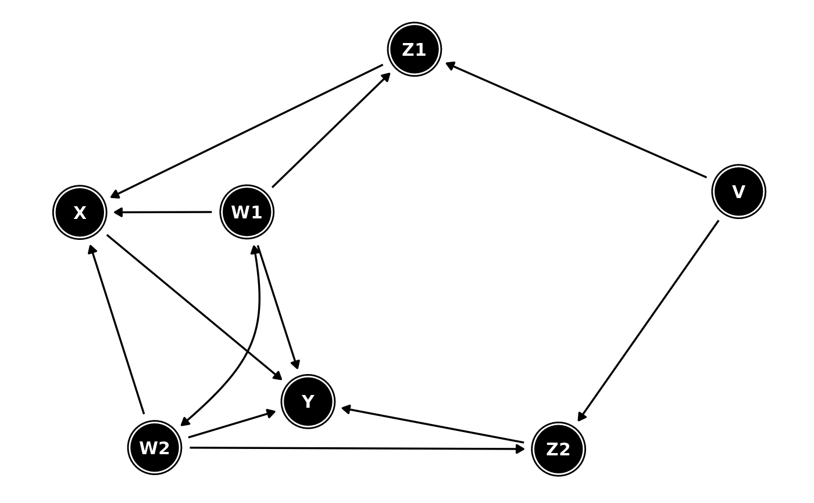

Tidy a dagitty object
Arguments
- .dagitty
a
dagitty- seed
a numeric seed for reproducible layout generation
- layout
a layout available in
ggraph. Seeggraph::create_layout()for details.- ...
optional arguments passed to
ggraph::create_layout()
Examples
library(dagitty)
library(ggplot2)
dag <- dagitty("dag {
Y <- X <- Z1 <- V -> Z2 -> Y
Z1 <- W1 <-> W2 -> Z2
X <- W1 -> Y
X <- W2 -> Y
X [exposure]
Y [outcome]
}")
tidy_dagitty(dag)
#> # A DAG with 7 nodes and 12 edges
#> #
#> # Exposure: X
#> # Outcome: Y
#> #
#> # A tibble: 13 × 8
#> name x y direction to xend yend circular
#> <chr> <dbl> <dbl> <fct> <chr> <dbl> <dbl> <lgl>
#> 1 V -0.911 -1.92 -> Z1 0.456 -2.27 FALSE
#> 2 V -0.911 -1.92 -> Z2 -1.27 -3.28 FALSE
#> 3 W1 0.427 -3.25 -> X 0.838 -3.72 FALSE
#> 4 W1 0.427 -3.25 -> Y -0.169 -4.32 FALSE
#> 5 W1 0.427 -3.25 -> Z1 0.456 -2.27 FALSE
#> 6 W1 0.427 -3.25 <-> W2 -0.385 -3.73 FALSE
#> 7 W2 -0.385 -3.73 -> X 0.838 -3.72 FALSE
#> 8 W2 -0.385 -3.73 -> Y -0.169 -4.32 FALSE
#> 9 W2 -0.385 -3.73 -> Z2 -1.27 -3.28 FALSE
#> 10 X 0.838 -3.72 -> Y -0.169 -4.32 FALSE
#> 11 Y -0.169 -4.32 NA NA NA NA FALSE
#> 12 Z1 0.456 -2.27 -> X 0.838 -3.72 FALSE
#> 13 Z2 -1.27 -3.28 -> Y -0.169 -4.32 FALSE
tidy_dagitty(dag, layout = "fr") %>%
ggplot(aes(x = x, y = y, xend = xend, yend = yend)) +
geom_dag_node() +
geom_dag_text() +
geom_dag_edges() +
theme_dag()
